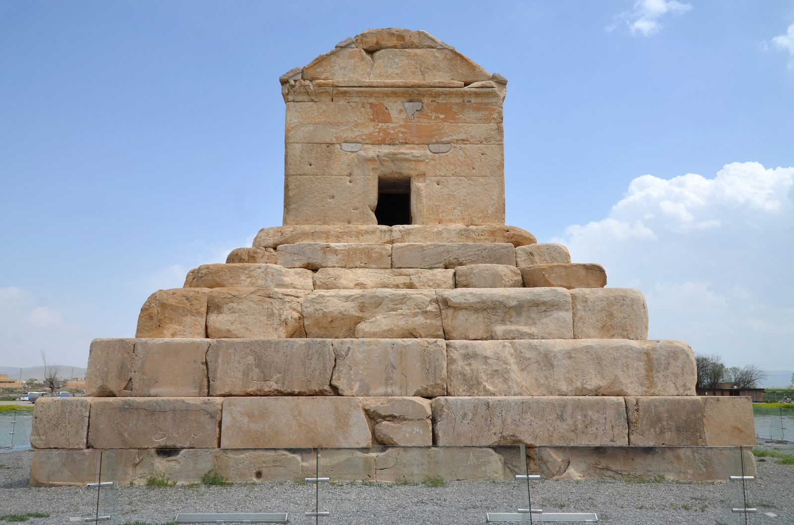
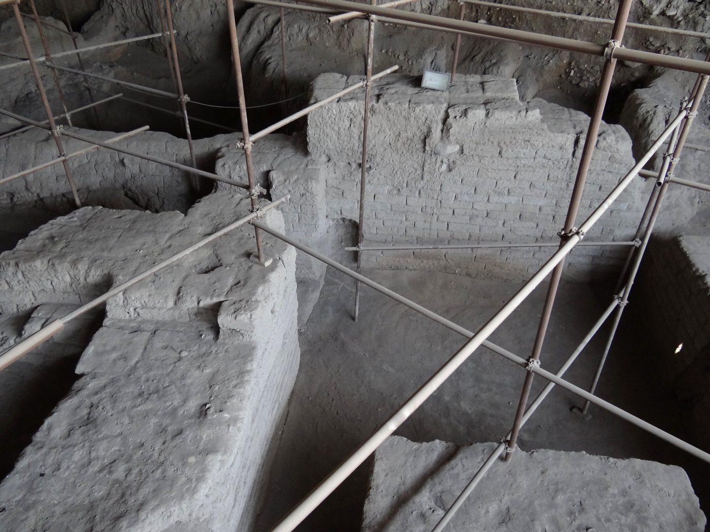
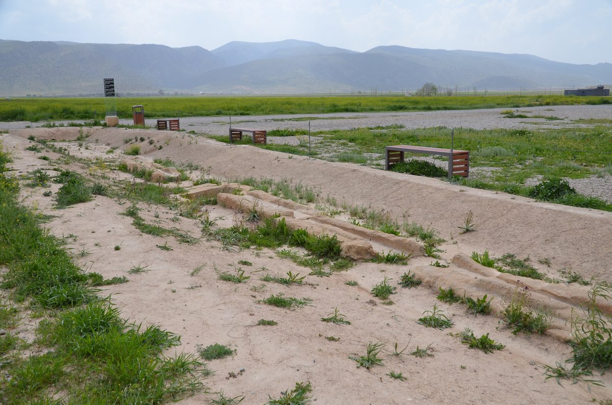
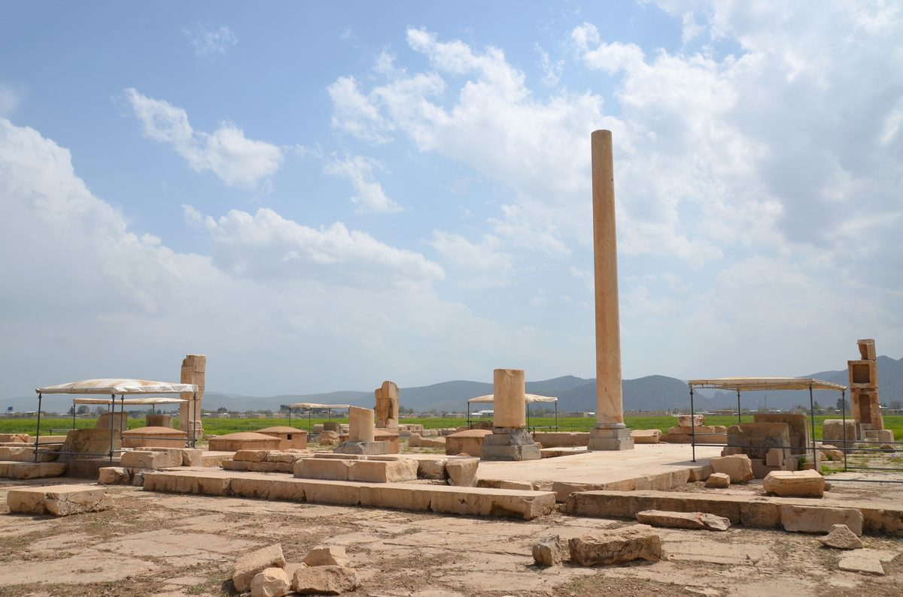
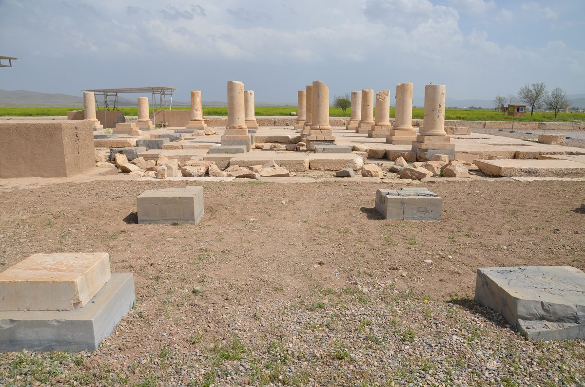
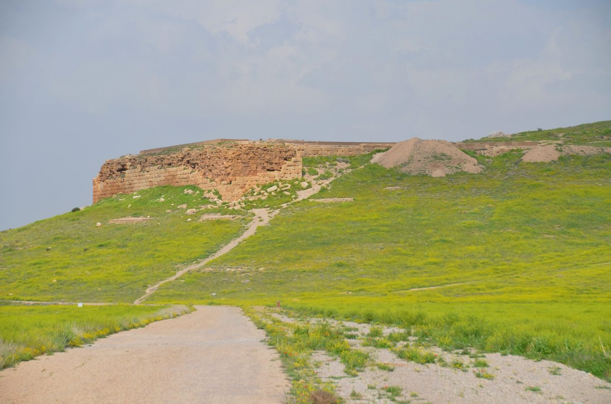
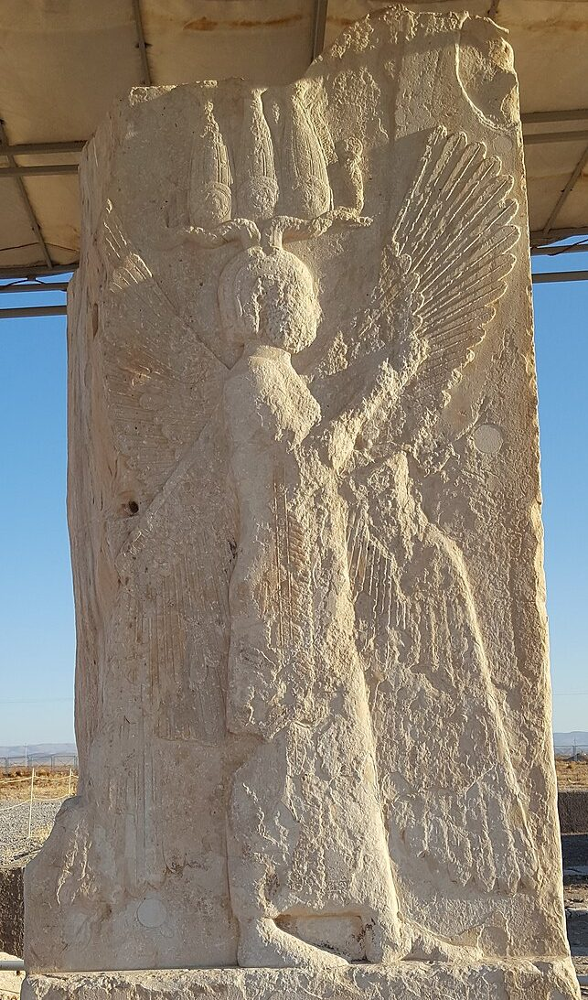
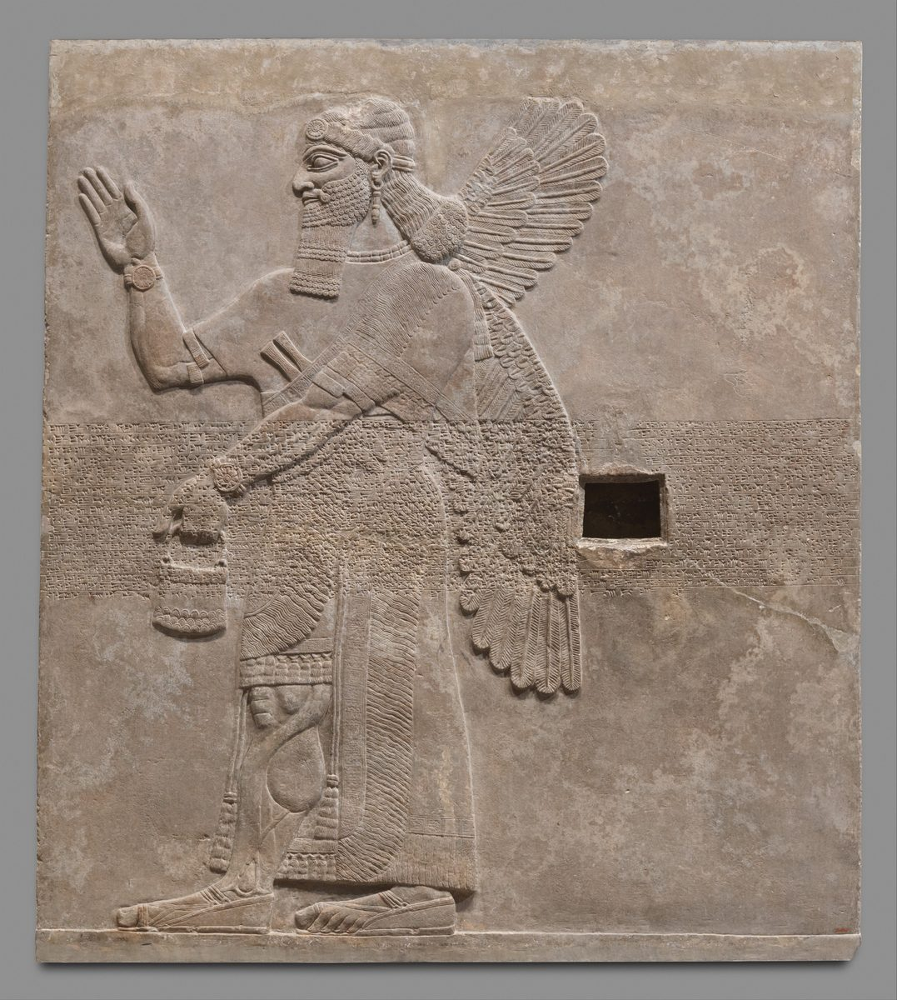
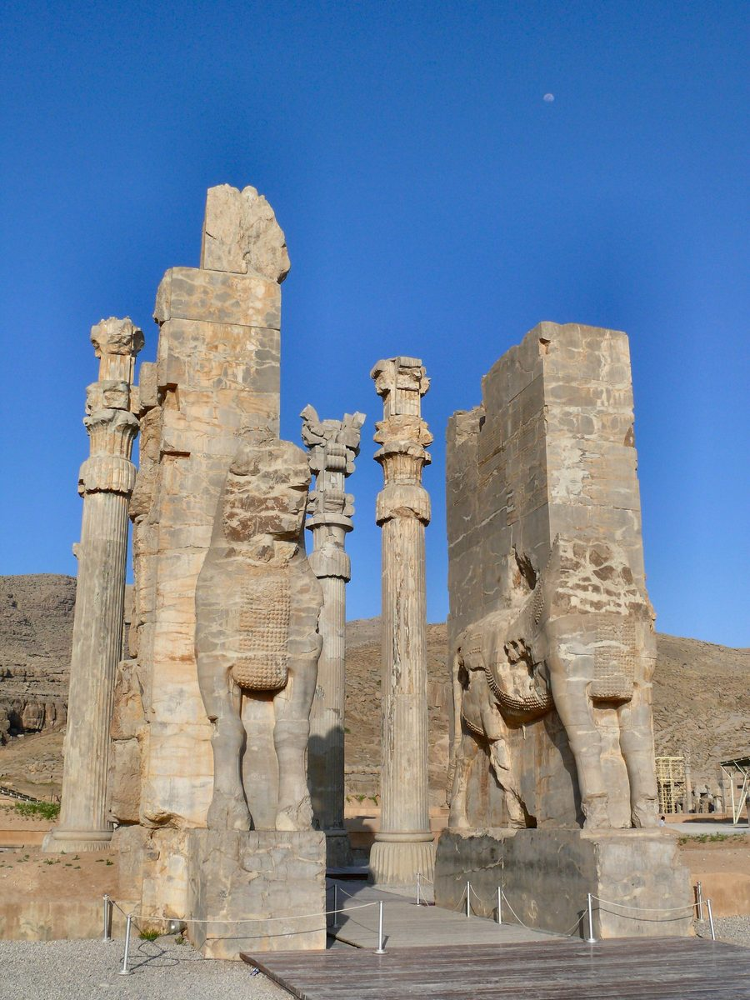

Unit 2 · Persepolis · Lesson 2
Before Persepolis: Ecbatana and Pasargadae
Where did the first Persian kings rule from, and what changed when Darius built Persepolis?
Year 11 Ancient History · Present with → or space · Read on a phone with R

Connect · 3 minutes · everyone writes one line
Name one cause of the empire’s growth under Cyrus and one effect.
“Because Cyrus …, … ”
One line, in 60 seconds. Use a place and a date.
Where did these kings rule from?
The Median king Astyages’s own army turned against him and handed him to Cyrus (about 550 BCE), so Cyrus took the Medes’ royal city, Ecbatana, and its treasure. · Because Cyrus took Lydia (about 546 BCE), his general Harpagus was able to conquer the Greek cities of Ionia, Lydia’s former subjects.
Not from one capital. The Persian kings used several royal centres, among them Ecbatana, taken from the Medes, and Pasargadae, which Cyrus built in Fars. Darius later founded Persepolis. Today: the two royal centres before Persepolis.
Learning intentions and success criteria · 2 minutes
Today’s goals
- understand what the early capitals Ecbatana and Pasargadae tell us about the empire
- analyse continuity and change from Pasargadae to Persepolis
- describe two features of Pasargadae and explain why so little is known about Ecbatana
- identify two continuities and two changes between Pasargadae and Persepolis
- write a continuity-and-change paragraph using precise evidence
Syllabus outcomes: AH-11-01 explains continuity and change in the ancient world · AH-11-05 analyses different types of sources for evidence to support a historical account or argument · AH-11-07 communicates historical understanding, applying historical knowledge, terms and concepts. Life Skills: AH-LS-03 identifies continuity and change in the ancient world · AH-LS-05 describes features of places or societies in the ancient world.
Note-making · the routine for the whole course
How to structure your notes
questions and key terms, written after
short phrases, arrows (→ leads to), abbreviations (c. = about; BCE = Before the Common Era)
- 1Rule up the page firstA cue column about a quarter of the page wide; title and date at the top; room for a summary at the bottom.
- 2Listen and look, then writeDon’t copy while a slide is being explained. Phrases, not sentences.
- 3Write your own notes at each ✎ checkpointThen compare with the model notes, one row at a time. Add what you missed in a second colour.
- 4Write the cue questions afterwardsUse exam verbs: explain, analyse, assess. To revise, cover your notes and answer the cues.
- 5Finish with a three-sentence summaryTwo checkpoints today: Ecbatana and Pasargadae · the Gate R figure and two continuities.
Key vocabulary · add to the unit word wall
Words for today
| Places and people | Meaning |
|---|---|
| Achaemenid | The royal family (and empire) descended, they claimed, from an ancestor called Achaemenes; it ruled Persia from Cyrus the Great to Darius III. |
| Fars (Pārsa) | The Persian homeland in south-west Iran, where Persepolis stands. |
| Ecbatana | The capital of the Medes (modern Hamadan), taken by Cyrus; later a Persian royal residence. |
| Pasargadae | Cyrus the Great’s capital in Fars, with palaces in a garden landscape and his tomb. |
| Paradise (pairidaeza) | A walled Persian garden or park; the origin of the English word ‘paradise’. |
| Buildings and change | Meaning |
|---|---|
| Terrace | The huge raised platform on which the buildings of Persepolis stand. |
| Hypostyle hall | A hall whose roof is held up by many columns. |
| Relief | A carving that stands out from a flat stone background. |
| Trilingual inscription | An inscription written in three languages (at Persepolis usually Old Persian, Elamite and Babylonian). |
| continuity / change | What stays the same over time / what becomes different over time. |
1 · Ecbatana · I do
Ecbatana: a royal city under a modern city
- Where: modern Hamadan, in western Iran
- What: the capital of the Medes
- When: taken by Cyrus in about 550 BCE (a Babylonian chronicle records it)
- Later: a Persian royal residence and treasury: in 330 BCE Alexander had the treasure brought from Persis stored in its citadel
- Digs: Iranian teams have dug at the hill of Tepe Hegmataneh since 1983
Why do we know so little about Ecbatana?
Most of the ancient city lies under modern Hamadan, so only parts of it can be dug. The digs at Tepe Hegmataneh have found little that can be firmly dated to the Median city. So historians rely mostly on Greek writers, who were outsiders writing long after the Medes lost power.

1 · Ecbatana · I do — think aloud
Herodotus’s Ecbatana: seven circles of walls
So he [Deioces, the first king of the Medes] built the big and strong walls, one standing inside the next in circles, which are now called Ecbatana. … There are seven circles in all; within the innermost circle are the palace and the treasuries … The battlements of the first circle are white, of the second black, of the third circle purple, of the fourth blue, and of the fifth orange … and the battlements of the last two circles are coated, the one with silver and the other with gold.
Herodotus, Histories 1.98 · written about 430 BCE, about 120 years after Cyrus took Ecbatana · A. D. Godley’s translation (Loeb, 1920), as revised by the Perseus Digital Library
How far can we trust this as a description of the Medes’ Ecbatana?
Probably exaggerated. Herodotus wrote about 120 years after Cyrus took the city and does not say he saw it; seven rising walls ending in silver and gold read more like a story about a great king than a survey; and digs have not found them. It is still useful evidence of the story Herodotus heard and told about a Median royal city, and its palace and treasuries fit other sources that call Ecbatana a royal residence and treasury.
2 · Pasargadae · I do
Pasargadae: Cyrus’s royal centre in Fars
- Where: in Fars, the Persian homeland, about 40 km north-east of where Persepolis would stand
- Built: under Cyrus the Great (ruled about 559–530 BCE)
- Layout: separate buildings spread through a park of about 2 × 3 km, with a walled royal garden at its centre
- Material: cut stone, held with metal clamps, where most buildings of the time were mud brick
- Later: still honoured; probably where later kings were crowned
It is best to imagine Pasargadae as a group of garden pavilions in a park …
Jona Lendering, ‘Pasargadae’, Livius.org
2 · Pasargadae · I do — think aloud: what does each feature show about Cyrus as king?
A tour of Pasargadae




Images: Carole Raddato (CC BY-SA 2.0) · Carole Raddato (CC BY-SA 2.0) · Carole Raddato (CC BY-SA 2.0) · Carole Raddato (CC BY-SA 2.0). Full details on the last slide.
2 · Pasargadae · I do — think aloud
The tomb of Cyrus, and what Arrian says was written on it
- Built: probably about 540–530 BCE
- Form: a gabled stone chamber on six steps, about 11 m high
- Today: no inscription can be seen on it; repaired in 1971 and restored again in 2003–2008
He [Alexander] was grieved by the outrage committed upon the tomb of Cyrus, son of Cambyses; for according to Aristobulus, he found it dug through and pillaged. … Upon the tomb an inscription in Persian letters had been placed, which bore the following meaning in the Persian language: “O man, I am Cyrus, son of Cambyses, who founded the empire of the Persians, and was king of Asia. Do not therefore grudge me this monument.”
Arrian, Anabasis of Alexander 6.29 · written in the 2nd century CE, from the account of Aristobulus, who was with Alexander at the tomb in 324 BCE · trans. E. J. Chinnock (1884) · Project Gutenberg
How did Cyrus want to be remembered? How far can we rely on Arrian for the words?
As the founder of the Persian Empire and king of Asia, and the son of a king, asking passers-by to respect his tomb. But no inscription can be seen on the tomb today, and Arrian wrote about 450 years after Alexander’s visit (more than 650 years after Cyrus died), giving only its “meaning” as Aristobulus reported it. Reliable for what Aristobulus reported; less reliable for Cyrus’s exact words.
Notes checkpoint 1 of 2
Ecbatana and Pasargadae
Write your own notes first. Then compare, row by row, and add what you missed in a second colour.
3 · Continuity and change · We do — See – Think – Wonder · 5 minutes · press K for the timer
Look closely. Who or what could this be?

only what is really there
a figure in profile, carved on a tall stone slab · four wings, two raised and two lowered · a tall headdress on long horns · a long robe with a fringed edge · one hand raised
what it might be, and how sure you are
a god or a spirit (fairly sure: the wings) · a king (a guess: the headdress) · it stood beside a doorway (a guess: the tall slab) · borrowed from another people’s art (fairly sure)
questions you want answered
Who carved it, and for whom? · Why mix so many styles? · Was there writing with it?
Images: Shamsshams67 (CC BY-SA 4.0). Full details on the last slide.
3 · Continuity and change · We do — the reveal
A guardian at the gate: the winged figure of Gate R

- Where: on a doorjamb of the gatehouse (Gate R), the main entrance to Cyrus’s palace garden at Pasargadae
- When: probably carved under Cyrus the Great
- What: four wings, an Elamite-style robe and an Egyptian-style crown
- Who: probably a protective spirit. An inscription naming Cyrus, once above it, made some think it was Cyrus himself
Where do its features come from, and what does the mix suggest?
Crown: Egyptian style · robe: Elamite style · wings: like the guardian spirits of Assyrian palaces (compare the Nimrud figure). Cyrus’s artists borrowed from the older kingdoms of the Near East, probably to show that the new empire had taken over their traditions of power.
The inscription was still there in 1861, when a traveller drew it, but had gone about fifteen years later. It used the Old Persian script, first used under Darius, so it was probably added after Cyrus died.
3 · Continuity and change · We do — the site we are comparing
Persepolis: the terrace begun by Darius I in about 518 BCE
- AOne terraceabout 450 × 300 m, holding all the main buildings
- BThe Apadanaan audience hall with 72 columns, about 20–24 m high
- CHall of a Hundred Columns70 × 70 m; begun under Xerxes, finished by Artaxerxes I
- DGate of All Nationsbuilt under Xerxes; bulls guard its west side, human-headed winged bulls its east
- EInscriptionsin Old Persian, Elamite and Babylonian, by Darius and later kings
- FReliefsthe same scenes repeated across the terrace, such as delegations of the empire’s peoples on the Apadana stairways
- GA new kind of tombDarius’s tomb is cut into a cliff at Naqsh-e Rustam, about 6 km north
3 · Continuity and change · We do — the first two rows together · cold call for each cell
The comparison grid: two features that continue
| Feature | Pasargadae (Cyrus) | Persepolis (Darius and later kings) | Continuity or change? | Evidence |
|---|---|---|---|---|
| 1 · Columned halls | Palace S, the audience hall (a column more than 13 m high) and Palace P (30 columns) | the Apadana (72 columns, about 20–24 m high) and the Hall of a Hundred Columns | continuity, on a bigger scale | column bases and the re-erected column at Pasargadae; the Apadana’s columns |
| 2 · Guardian figures at the gate | Gate R: a four-winged guardian on a doorjamb; its doorways probably guarded by bulls too | Gate of All Nations: bulls on the west side, human-headed winged bulls on the east | continuity | the Gate R relief; the figures of the Gate of All Nations |

Notes checkpoint 2 of 2
The Gate R figure and two continuities
3 · Continuity and change · You do · 6 minutes · press K for the timer
Finish the grid: rows 3–6
Rows 3–6, every column. Use the Persepolis plan and fact file and your notes.
Use the labelled pictures. For each row ask: the same, or different?
Add row 7, royal tombs. Which row is the hardest to call, and why?
| Feature | Pasargadae (Cyrus) | Persepolis (Darius and later kings) | Continuity or change? | Evidence |
|---|---|---|---|---|
| 3 · Inscriptions | ‘I, Cyrus the king, an Achaemenid’ in three languages, but in a script first used under Darius | three-language inscriptions of Darius and later kings | tricky: probably Darius’s work at both | the Old Persian script was first used under Darius |
| 4 · A raised platform | Tall-e Takht, a stone platform probably left unfinished when Cyrus died (530 BCE) | one terrace, about 450 × 300 m, for all the main buildings | change | a raised platform was already planned at Pasargadae; one terrace for everything is new |
| 5 · Layout | palaces and pavilions apart in a walled garden | main buildings side by side on the terrace | change | the two plans |
| 6 · Carving style | a mix of Egyptian, Elamite and Assyrian styles | the same scenes repeated in a more uniform court style | change, though borrowing continues | Gate R; the Apadana stairways |
| 7 · Royal tombs | a free-standing tomb on six steps | Darius’s tomb cut into a cliff at Naqsh-e Rustam | change | the tomb of Cyrus; Naqsh-e Rustam |
3 · Continuity and change · Writing focus · 6 minutes · I do → We do → apply
Writing focus: a topic sentence that answers the question
A topic sentence answers the question in one sentence, so everything after it is evidence for it. For continuity and change: from … to …, … continued, but … changed.
From the Medes to the Persians, Ecbatana remained a royal city, but its role changed: the capital of the Medes became one of several Persian royal residences, and a treasury.
A worked example, written for this lesson, on Ecbatana. Connectives by function · similarity: similarly, both, also · difference: but, whereas, in contrast, unlike · concession: although, even if, yet.
Which opening sentence answers “Explain the continuity and change in the evidence for Ecbatana, from Herodotus to today”?
- AHerodotus wrote about Ecbatana in about 430 BCE, and much later, from 1983, Iranian teams began to dig at Tepe Hegmataneh.
- BHerodotus describes seven circles of coloured walls, and the digs at Tepe Hegmataneh lie under the modern city of Hamadan.
- CFrom Herodotus to today, the Median city has stayed hard to see, but the evidence has changed from a Greek story to excavation.
- DThis paragraph will explain the continuity and change in the evidence for Ecbatana, using Herodotus and the modern digs.
C names what continued and what changed, joined by but: a claim to prove. A narrates a timeline. B describes the evidence but never says what continued or changed. D announces instead of answering.
Write your topic sentence first: what continued, what changed. Then use a connective that does the right job for each pair, and end with which matters more, and why. Your Writing toolkit (booklet pages 3–4): connectives by function.
3 · Continuity and change · You do — write · 12 minutes · press K for the timer
Explain the continuity and change from Pasargadae to Persepolis.
Verb explain: make the links evident (what continued, what changed, and why) · Topic royal building · Limits Pasargadae (Cyrus) → Persepolis (Darius and later kings) · Do a topic sentence, two continuities and two changes with evidence, then which matters more.
- two continuities and two changes, each with precise evidence from your grid
- a judgement: which matters more, and why?
- time connectives and comparative language: whereas · similarly · in contrast · by the reign of Darius
Use the frame: “One continuity is … ; however, … changed because …” Then repeat it for your second pair.
Assess why Darius built a new capital rather than enlarging Pasargadae: legitimacy after 522 BCE, practicality or ideology?
From Pasargadae to Persepolis, the kinds of royal building continued, but the way they were planned changed. Cyrus’s audience hall and residence at Pasargadae were halls of stone columns; similarly, Persepolis was built around columned halls, above all the Apadana with its 72 columns. Guardian figures also continued: a four-winged guardian was carved at Cyrus’s gatehouse, and bulls guard the Gate of All Nations at Persepolis. However, by the reign of Darius the layout had changed. Whereas Cyrus’s palaces stood apart in a walled garden, and his stone platform at Tall-e Takht was probably left unfinished when he died, the main buildings of Persepolis stand together on one terrace of about 450 by 300 metres. In contrast to the mix of styles on the Gate R figure, Persepolis repeats the same scenes in a more uniform court style. The changes matter more, because they turn Cyrus’s separate buildings into one planned display of royal power.
Check · gesture vote · thumbs up = agree · sideways = not sure · down = disagree
“Persepolis was just Pasargadae on a bigger scale.”
Everyone at once, on “3, 2, 1, vote”.
One student from each camp: give your best piece of evidence from the grid.
Columned halls, guardian figures at the gates and building in cut stone all continue; the Apadana is a far larger version of Cyrus’s halls.
One terrace holding everything replaces separate buildings in a garden; the carvings follow a more uniform court style; and the three-language inscriptions at Pasargadae were probably Darius’s own additions.
Partly true: the kinds of building continue, but the plan and the style are new, so calling Persepolis ‘just’ a bigger Pasargadae is too strong.
Exit ticket · 4 minutes · before you leave
One continuity and one change
One continuity from Pasargadae to Persepolis is …
One change is … , because …
1 · a feature found at both sites, named precisely, with an example from each (columned halls: Palace S, the Apadana). 2 · a feature that is new at Persepolis, with evidence from both sites (one terrace instead of buildings spread through a garden), and a reason that explains it.
Then check yourself against today’s three “I can” statements. Next lesson: why did Darius build here? The significance of the site’s location.
Finish your notes If time · or at home
Summary: three sentences
- Why is so little known about Ecbatana?
- What do the features of Pasargadae suggest about Cyrus as king?
- What continued, and what changed, at Persepolis?
Ecbatana, the Median capital that Cyrus took in about 550 BCE, lies mostly under modern Hamadan, so historians rely largely on Greek writers such as Herodotus, whose seven coloured walls are probably exaggerated. At Pasargadae, Cyrus built stone palaces and pavilions in a walled garden that presented him as a king who brought order to the land, with an audience hall built to impress visitors and a guardian figure that mixes Egyptian-style, Elamite-style and Assyrian-style features. Persepolis continued Pasargadae’s columned halls and guardian figures, but placed all its main buildings on one great terrace in a more uniform court style, so the change from Cyrus to Darius was greater than the continuity.
Practice and review · 1 of 3 · true, false, justify
True or false? Justify your answer
- 1Ecbatana has been fully excavated. False — most of it lies under modern Hamadan, and the digs have found little that can be firmly dated to the Median city.
- 2Herodotus’s seven coloured walls at Ecbatana are probably exaggerated. True — he wrote about 120 years after Cyrus took the city, the pattern is too neat, and the walls have not been found.
- 3Pasargadae was a walled city of crowded streets. False — its palaces and pavilions stood apart in a walled garden park.
- 4The inscriptions naming Cyrus at Pasargadae prove that Cyrus had them carved. False — they use a script first used under Darius, so they were probably added by Darius.
- 5The tomb inscription quoted by Arrian can still be read on the tomb. False — no inscription can be seen today; we rely on Arrian’s report of Aristobulus’s account.
- 6Columned halls are a continuity from Pasargadae to Persepolis. True — Palace S and Palace P at Pasargadae; the Apadana and the Hall of a Hundred Columns at Persepolis.
Practice and review · 2 of 3 · writing
Write it as a historian
Finish, about Herodotus 1.98: “This source is reliable for … but not for … because …”
Herodotus 1.98 is reliable for the story about the Median kings’ capital that Herodotus heard and told his Greek readers in the fifth century BCE, but not for the real layout of Median Ecbatana, because he wrote about 120 years after Cyrus took the city and digs have not found his seven walls.
Compare the layout of Pasargadae and Persepolis in one sentence.
Whereas Cyrus’s buildings at Pasargadae stood apart in a walled garden, by the reign of Darius the main buildings of Persepolis stood together on one terrace.
“Cyrus’s audience hall had tall stone columns; however, the Apadana also had columns.” The connective does the wrong job: rewrite the sentence with one that does the right job.
Cyrus’s audience hall at Pasargadae was a hall of tall stone columns, one of which, re-erected, stands more than 13 metres high; similarly, the Apadana at Persepolis was built around 72 columns. (A model, written for this lesson: however marks a difference; these halls are alike.)
Assess why Darius built a new capital rather than enlarging Pasargadae: legitimacy after 522 BCE, practicality or ideology?
Darius probably built Persepolis more for legitimacy and ideology than for practical reasons. After 522 BCE his right to rule was open to doubt: he was not Cyrus’s son, and some historians think the king he killed was Cyrus’s real son, Bardiya. If, as seems likely, it was Darius who added the inscriptions at Pasargadae that call Cyrus an Achaemenid, he was tying his own family to the founder, but Pasargadae remained Cyrus’s monument, with Cyrus’s tomb nearby. A new capital let Darius present his own vision of kingship: one terrace, a more uniform court style and his own inscriptions. Practical reasons, such as room for a larger court and treasury, may also have mattered, but the evidence we have seen so far is weaker for them, so legitimacy and ideology are the stronger explanation.
Practice and review · 3 of 3 · cover your notes and answer from memory
Quick checks
- Explain why so little is known about Ecbatana. Most of it lies under modern Hamadan; the digs at Tepe Hegmataneh have found little firmly dated to the Median city; so historians rely mostly on Greek writers.
- What did Herodotus say about Ecbatana’s walls, and why do historians doubt it? Seven circles of walls, each higher than the last, with coloured battlements and the last two silver and gold; he wrote about 120 years after Cyrus took the city, it is too neat, and the walls have not been found.
- Describe two features of Pasargadae. Any two: palaces and pavilions in a walled garden with stone water channels; Palace S, an audience hall with a column more than 13 m high; Palace P with 30 columns; the unfinished platform of Tall-e Takht; the tomb of Cyrus on six steps.
- Who wrote down the inscription ‘O man, I am Cyrus …’ for us, and why is that a problem? Arrian, in the 2nd century CE, from Aristobulus’s account: about 450 years after Alexander’s visit, giving only its meaning, and no inscription can be seen on the tomb today.
- Identify two continuities and two changes from Pasargadae to Persepolis. Continuities: columned halls; guardian figures at gates. Changes: one terrace holding all the main buildings; a more uniform court style (also: a rock-cut royal tomb).
- Why are the three-language inscriptions at Pasargadae tricky evidence? They name Cyrus, but they use a script first used under Darius, so they were probably added by Darius, linking himself to Cyrus.
Sources and credits
Where everything comes from
Arrian, Anabasis of Alexander 6.29, trans. E. J. Chinnock (1884, public domain), from Project Gutenberg EBook #46976 (archive.org copy).
Herodotus, Histories 1.98: A. D. Godley’s Loeb translation (Vol. I, 1920), in the revised version published by the Perseus Digital Library (CC BY-SA 3.0 US). Godley’s printed wording differs in places (he has ‘Agbatana’ and ‘the king’s dwellings’).
Jona Lendering, ‘Pasargadae’, ‘Ecbatana (Hamadan)’ and ‘Persepolis’, Livius.org (quoted briefly; the sketch map of Pasargadae and the plan of Persepolis are drawn after its maps). The inscription ‘I, Cyrus the king, an Achaemenid’ is in Livius’s translation.
Ali Mousavi, ‘Pasargadae’, Archaeological Gazetteer of Iran (UCLA, 2023).
Outcomes and content: NSW Education Standards Authority (NESA), Ancient History 11–12 Syllabus (2024). © NESA.
The three diagrams were drawn for this lesson. Teacher resource: The Persian Empire: Cyrus to Darius I (class notebook).
Also cited in the lesson notes: the Nabonidus Chronicle (ABC 7) ii.1–4, trans. A. K. Grayson, as published by Livius.org; Arrian, Anabasis 3.19 (Chinnock, as above); Herodotus 1.98 in Godley’s printed Loeb, with his footnote (via LacusCurtius, public domain); A. Majlesi, ‘Excavation sheds new light on mysterious capital of Medes in Ecbatana’, Tehran Times, 30 June 2020; Encyclopaedia Iranica, ‘Cyrus v. Tomb’; Britannica, ‘Tomb of Cyrus’; University of Oxford, ‘Cabinet’: Tomb of Cyrus; UNESCO World Heritage Centre, ‘Persepolis’; and Xenophon (Anabasis 3.5.15), Polybius (10.27) and Plutarch (Artaxerxes 3), as cited by Livius.
- The tomb of Cyrus, Pasargadae · Photo: Carole Raddato · CC BY-SA 2.0 · source
- Excavation work at Tepe Hegmataneh, Hamadan · Photo: Adam Jones · CC BY-SA 2.0 · source
- Water channels of the royal garden, Pasargadae · Photo: Carole Raddato · CC BY-SA 2.0 · source
- Palace S (the audience hall), Pasargadae · Photo: Carole Raddato · CC BY-SA 2.0 · source
- Palace P (the residence), Pasargadae · Photo: Carole Raddato · CC BY-SA 2.0 · source
- Tall-e Takht, Pasargadae · Photo: Carole Raddato · CC BY-SA 2.0 · source
- The winged figure of Gate R, Pasargadae (cropped) · Photo: Shamsshams67 · CC BY-SA 4.0 · source
- Relief panel with a winged figure, Nimrud (The Met, 32.143.8) · The Metropolitan Museum of Art, Gift of John D. Rockefeller Jr., 1932 · CC0 1.0 · source
- The Gate of All Nations, Persepolis · Photo: dynamosquito · CC BY-SA 2.0 · source
.jpg){kind=link}
.jpg){kind=link}
.jpg){kind=link}
.jpg){kind=link}
.jpg){kind=link}
.jpg){kind=link}


All images are public domain or openly licensed, and were resized for the web (the Gate R relief was also cropped). Each is shared under the licence shown.